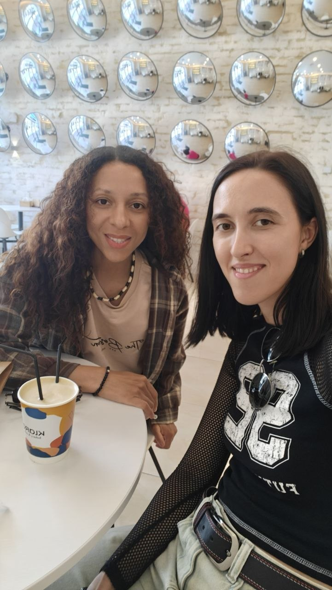
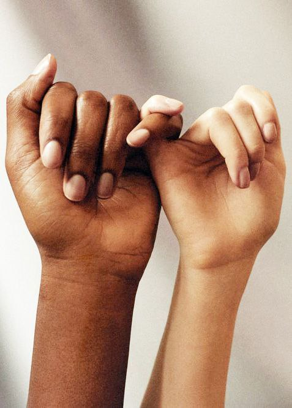
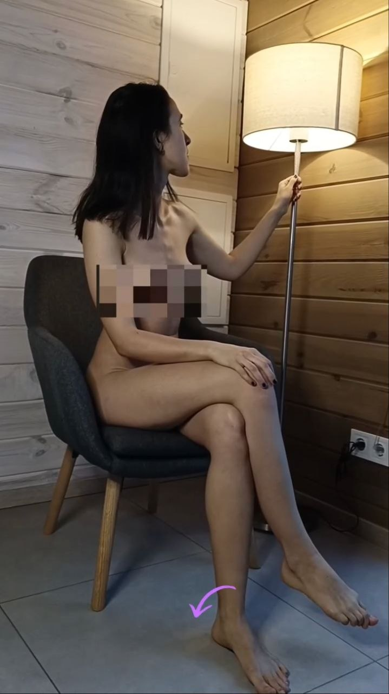
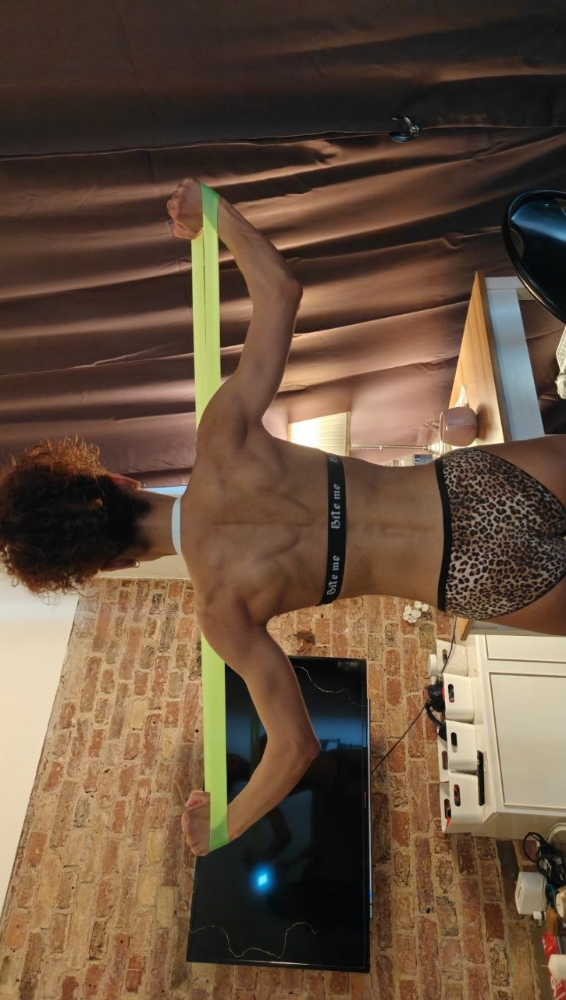

Тантра для жінок
Можливість відпустити контроль
І відчути турботу про себе
Кожен сеанс повністю конфіденційний
Без поспіху, спокійно, без сторонніх
Давай одразу перейдемо на «ти». Адже немає сенсу будувати стіни там, де краще будувати мости.
В світі Тантри ми Хіросіма і Ірида, це наші духовні імена. Але нас називають завжди просто Сіма та Іра.
Ми пара в реальному житті, партнерки в бізнесі, однодумниці та співавторки тантричних ритуалів.
Разом вже майже 9 років, і весь цей час нас поєднує не лише кохання, а й спільна справа: ми партнерки у
дослідженні тіла, почуттів і життя.
За ці роки ми провели вже понад 900 сеансів, а географія нашої практики давно вийшла за межі України:
Копенгаген, Берлін, Дюссельдорф, Франкфурт, Бухарест, Гельсінкі, Кишинів, Відень.
Ми не живемо в Україні постійно, але часто приїжджаємо. Основна локація в UA— Київ, але іноді ми буваємо і в інших містах.
На двох у нас: медична освіта, досвід у Wellness SPA, практика в тілесно-орієнтованій терапії, китайській та корейській медицині, теорії чакр і цифрової психології. Усе це стало основою нашого шляху — допомагати людям через тіло, контакт та енергію.


За роки разом ми пройшли шлях від ревнощів, страху втратити одна одну, скутості в розмовах про близькість — до усвідомленого проживання своєї сексуальності. І тепер ми допомагаємо іншим робити те саме: звільнятися від сорому, старих сценаріїв і тілесних затисків. Щоб бажання перестало бути страхом, а стало джерелом живої сили.
Ми хотіли, щоб наші стосунки були живими, не формальними, не побудованими на контролі. І саме цей пошук став початком усього — спочатку між нами, а потім між людьми.
Це символ безмежної сили та пристрасті, які, на жаль, часто приховані у патріархальному чоловічому світі. Це богиня, яка живе серед хаосу, війн, руйнувань та несправедливості, але не втратила віру в кращий світ.
Умовності, стереотипи та примітивні шаблони ніколи не були й не будуть частиною нашого світу.
Ми захоплюємося жіночим тілом, його красою, формами, чутливістю та здатністю жінок розкриватися
через
дотик.

Якщо ти потрапила до нас на сеанс — для нас не має значення твоя орієнтація. Чи торкалася ти колись жіночого тіла, чи ні — для нас ти вже найпривабливіша, тому що наважилася обрати життя та досліджувати нові горизонти.

Більшість жіночих практик навчають одного й того самого:
— піклуватися про себе
— любити й приймати себе
— розкривати свою жіночність
А наш Тантра Ритуал — про ОТРИМАННЯ турботи від інших людей. І це окремий психологічний досвід. Для багатьох жінок прийняти турботу набагато складніше, ніж турбуватися про інших.
і при цьому не бути об'єктом сексуального інтересу, відповідаючи чиїмось очікуванням
Ми дбайливо ставимося до особистого простору, почуттів і індивідуального темпу кожної жінки.